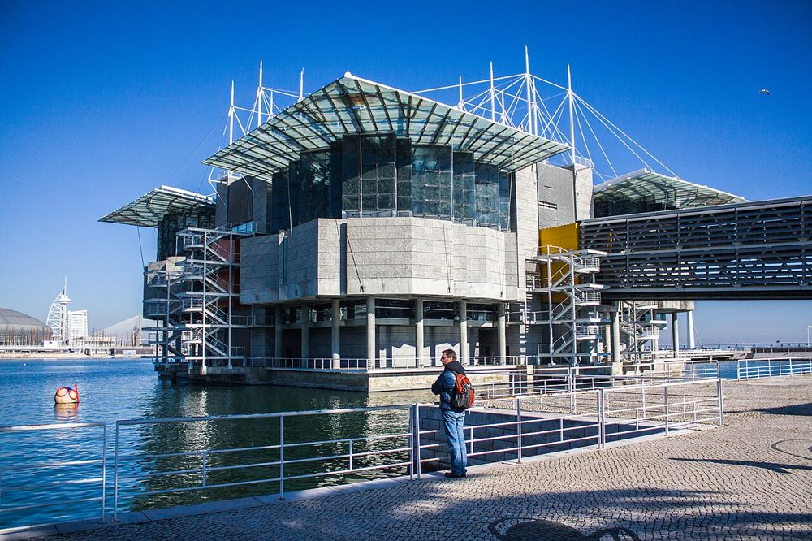

18 lieux choisis et décrits pour les familles, un plan B pour chaque jour de pluie, la carte des services utiles et un carnet PDF avec les jeux des enfants.
Choisissez l'âge de votre enfant ou une envie. Chaque fiche donne l'adresse, le transport et les services les plus proches.
Aucun lieu ne correspond à ces filtres.

Photo : Shadowgate from Novara, ITALY · CC BY 2.00–17 ans
Oceanário de Lisboa
Environ 2 h 30 · Parc des Nations
CouvertPoussette OK
Un des plus grands aquariums d'Europe, organisé autour d'un immense bassin central visible depuis plusieurs étages. Venez à l'ouverture.
Esplanada Dom Carlos I, s/n, 1990-005 Lisboa Métro Oriente (ligne rouge), puis 10 min à pied
Facile en poussette · beaucoup de rues pavées autour · 11 escaliers recensés à moins de 250 m, souvent contournables · station la plus proche : Lisboa - Oriente, à 660 m, accès sans marche signalé
Le musée des sciences à toucher, juste à côté de l'Oceanário : parfait pour compléter la journée ou quand il pleut.
Largo José Mariano Gago, 1, 1990-073 Lisboa Métro Oriente (ligne rouge), puis 10 min à pied
Facile en poussette · beaucoup de rues pavées autour · 12 escaliers recensés à moins de 250 m, souvent contournables · station la plus proche : Lisboa - Oriente, à 700 m, accès sans marche signalé · 3 ascenseurs publics signalés à moins de 400 m
Une balade suspendue au-dessus du bord du Tage, avec vue sur le très long pont Vasco de Gama.
Passeio das Tágides, 1990 Lisboa Métro Oriente (ligne rouge), puis 10 min à pied
Poussette possible, à anticiper · beaucoup de rues pavées autour · beaucoup d'escaliers dans le quartier (17 recensés à moins de 250 m) · station la plus proche : Lisboa - Oriente, à 480 m, accès sans marche signalé
Le quartier moderne né de l'Exposition universelle de 1998 : promenade plate au bord de l'eau, jardins et jeux d'eau.
Passeio do Tejo, 1990 Lisboa Métro Oriente (ligne rouge)
Facile en poussette · beaucoup de rues pavées autour · 7 escaliers recensés à moins de 250 m, souvent contournables · station la plus proche : Lisboa - Oriente, à 530 m, accès sans marche signalé · 1 ascenseur public signalé à moins de 400 m
Photo : auteur indiqué sur la fiche source · CC BY-SA 2.05–17 ans
Château Saint-Georges
Environ 1 h 30 · Baixa, Alfama et château
Plein airPorte-bébé conseillé
Remparts, tours et le plus beau panorama sur la ville. Des paons se promènent dans les jardins. La montée est raide et pavée : porte-bébé conseillé.
Rua de Santa Cruz do Castelo, 1100-129 Lisboa Bus 737 depuis la Praça da Figueira
Porte-bébé conseillé · beaucoup de rues pavées autour · beaucoup d'escaliers dans le quartier (60 recensés à moins de 250 m) · station la plus proche : Rossio, à 400 m, accès partiel signalé · 3 ascenseurs publics signalés à moins de 400 m
Le plus vieux quartier de la ville, en ruelles et escaliers, avec des façades d'azulejos. Le belvédère offre une vue sur les toits et le Tage.
Largo de Santa Luzia, 1100-487 Lisboa Bus 737 ou à pied depuis la Baixa (forte montée)
Porte-bébé conseillé · beaucoup de rues pavées autour · beaucoup d'escaliers dans le quartier (76 recensés à moins de 250 m) · station la plus proche : Terreiro do Paço, à 660 m, accès sans marche signalé · 1 ascenseur public signalé à moins de 400 m
Une immense place ouverte sur le fleuve, idéale pour courir. L'arc de la rue Augusta, au nord, mène à la Baixa piétonne.
Praça do Comércio, 1100-148 Lisboa Métro Terreiro do Paço (ligne bleue)
Facile en poussette · beaucoup de rues pavées autour · 13 escaliers recensés à moins de 250 m, souvent contournables · station la plus proche : Terreiro do Paço, à 190 m, accès sans marche signalé · 2 ascenseurs publics signalés à moins de 400 m
Rouverte en mai 2026 après travaux, sur créneaux et avec environ 60 visiteurs à la fois : réservez. À l'intérieur, escaliers étroits ; l'extérieur se voit librement.
Avenida Brasília, 1400-038 Lisboa Tram 15E, arrêt Largo da Princesa, puis 10 min à pied
Porte-bébé conseillé · quelques rues pavées autour · 6 escaliers recensés à moins de 250 m, souvent contournables
Au sol, une immense rose des vents en mosaïque avec une carte du monde. La terrasse panoramique est payante.
Avenida Brasília, 1400-038 Lisboa Tram 15E, arrêt Mosteiro Jerónimos, puis 5 min à pied
Facile en poussette · beaucoup de rues pavées autour · 6 escaliers recensés à moins de 250 m, souvent contournables · 1 ascenseur public signalé à moins de 400 m
La pâtisserie historique des pastéis de nata. La file de vente à emporter avance vite ; les salles intérieures permettent souvent de s'asseoir plus rapidement.
Des carrosses royaux dorés dans un grand bâtiment moderne et plat : visite courte qui plaît beaucoup aux enfants.
Avenida da Índia, 136, 1300-300 Lisboa Tram 15E, arrêt Belém
Facile en poussette · beaucoup de rues pavées autour · 11 escaliers recensés à moins de 250 m, souvent contournables · 1 ascenseur public signalé à moins de 400 m
Facile en poussette · peu ou pas de pavés signalés autour · beaucoup d'escaliers dans le quartier (17 recensés à moins de 250 m) · station la plus proche : Jardim Zoológico, à 280 m, accessibilité non renseignée
Grand parc en pente avec une vue dégagée sur la ville jusqu'au Tage. Les serres de l'Estufa Fria, à côté, sont payantes.
Parque Eduardo VII, 1070-051 Lisboa Métro Marquês de Pombal (lignes bleue et jaune)
Poussette possible, à anticiper · beaucoup de rues pavées autour · beaucoup d'escaliers dans le quartier (25 recensés à moins de 250 m) · station la plus proche : Parque, à 250 m, pas d'accès sans marche
Un jardin calme et plat, avec un étang, des canards et des tortues. Idéal pour une pause ou une sieste en poussette.
Avenida de Berna, 45A, 1067-001 Lisboa Métro São Sebastião (lignes bleue et rouge)
Facile en poussette · beaucoup de rues pavées autour · beaucoup d'escaliers dans le quartier (20 recensés à moins de 250 m) · station la plus proche : São Sebastião, à 370 m, accès partiel signalé · 2 ascenseurs publics signalés à moins de 400 m
Photo : Vitor Oliveira from Torres Vedras,… · CC BY-SA 2.00–12 ans
Jardin de l'Estrela
Environ 45 min · Estrela et Lapa
Plein airGratuitPoussette OK
Un jardin de quartier apprécié des familles lisboètes, avec une aire de jeux et un petit lac.
Praça da Estrela, 1200-667 Lisboa Tram 28, arrêt Estrela
Facile en poussette · beaucoup de rues pavées autour · 12 escaliers recensés à moins de 250 m, souvent contournables · station la plus proche : Estrela, à 70 m, accès sans marche signalé
Des marionnettes du monde entier dans un ancien couvent. Une bonne idée pour une après-midi pluvieuse.
Rua da Esperança, 146, 1200-660 Lisboa Gare de Santos (train de Cascais), puis 10 min à pied
Facile en poussette · beaucoup de rues pavées autour · beaucoup d'escaliers dans le quartier (18 recensés à moins de 250 m) · station la plus proche : Santos, à 290 m, accessibilité non renseignée · 1 ascenseur public signalé à moins de 400 m
Tous les lieux du guide, et les toilettes, aires de jeux, tables à langer, pharmacies et restaurants équipés signalés. Touchez un point pour lancer l'itinéraire.
Autour de moi
Chargement des données OpenStreetMap…
Bon à savoir
Ascenseurs et funiculaires historiques
Après l'accident du funiculaire de Glória en septembre 2025, l'ascenseur de Santa Justa et les funiculaires de Glória, Bica et Lavra sont fermés, sans date de réouverture annoncée à l'automne 2026. Seul le funiculaire de Graça a rouvert en avril 2026.
Tramway 28
Mythique mais très bondé et fréquenté par les voleurs à la tire. Prenez-le tôt le matin, ou préférez le bus et le métro avec des enfants.
Chaleur et soleil
Le soleil tape fort de mai à septembre, avec peu d'ombre dans les quartiers hauts. Chapeaux, eau et visites couvertes en début d'après-midi.
Réserver à l'avance
La tour de Belém fonctionne sur créneaux, avec environ 60 visiteurs à la fois. Le monastère des Hiéronymites et l'Oceanário sont très demandés en haute saison.
Avec une poussette
Pavés et collines
Les trottoirs en « calçada portuguesa », de petits pavés blancs et noirs, sont superbes mais glissants, et la ville est très vallonnée. Le porte-bébé est précieux dans l'Alfama, le Chiado et autour du château.
Métro
Les stations récentes ont des ascenseurs, les plus anciennes pas toujours : vérifiez votre trajet sur le site du métro de Lisbonne.
Tramway 28
Étroit et bondé : on y monte difficilement avec une poussette dépliée. Préférez le bus ou le métro.
Les quartiers plats
Belém, le Parc des Nations et la Baixa sont plats et faciles en poussette, avec de grandes promenades au bord du Tage.
Urgences
Numéro d'urgence européen : 112, gratuit, depuis n'importe quel téléphone
Hôpital pédiatrique Dona Estefânia : Hôpital pour enfants avec urgences pédiatriques, dans le centre de Lisbonne
Pharmacies : Croix verte « Farmácia ». La pharmacie de garde (« de serviço ») est affichée sur la porte des pharmacies fermées.
Papiers
Pour un séjour au Portugal, carte d'identité ou passeport en cours de validité pour chaque membre de la famille, enfants compris, et carte européenne d'assurance maladie.
Enregistrez le carnet en PDF avant de partir : programme, adresses, transports, numéros d'urgence et jeux des enfants s'ouvrent ensuite sans aucun réseau. Les pages PetitMondo déjà consultées restent aussi disponibles hors connexion.
Combien de jours prévoir à Lisbonne avec des enfants ?
Trois jours permettent de voir l'essentiel sans courir, avec une visite majeure le matin et une pause l'après-midi. Avec un bébé ou un rythme tranquille, comptez un jour de plus.
Que faire à Lisbonne avec un bébé ?
Privilégiez les lieux plats et ombragés : Oceanário de Lisboa, Promenade et jardins du Parc des Nations, Place du Commerce, Jardim Zoológico de Lisboa, Jardin de la Fondation Gulbenkian, Jardin de l'Estrela.
Que faire à Lisbonne quand il pleut ?
Les meilleures options couvertes : Oceanário de Lisboa, Pavilhão do Conhecimento, Monastère des Hiéronymites, Pastéis de Belém, Musée national des Carrosses, Musée de la Marionnette.
Quelles activités gratuites à Lisbonne avec des enfants ?
Sans payer ou presque : Promenade et jardins du Parc des Nations, Alfama et belvédère de Santa Luzia, Place du Commerce, Monument aux Découvertes, Parc Édouard-VII, Jardin de la Fondation Gulbenkian, Jardin de l'Estrela, Plages de Cascais (excursion).
Quels papiers pour Lisbonne avec des enfants ?
Pour un séjour au Portugal, carte d'identité ou passeport en cours de validité pour chaque membre de la famille, enfants compris, et carte européenne d'assurance maladie.
Fiches vérifiées le 29 octobre 2026. Horaires, tarifs et conditions d'accès changent souvent : vérifiez toujours sur le site officiel avant de partir.